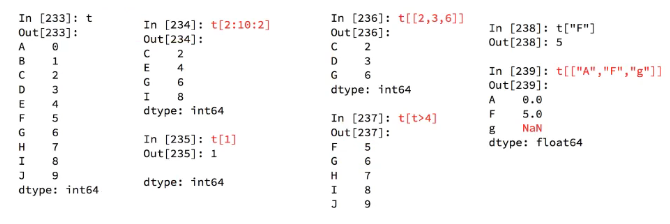

Series一维，带标签数组
DataFrame二维，Series容器
创建
t = pd.Series([1,2,3,4,5])
t = pd.Series([1,5,8,6,9],index=list("abcde"))
t = pd.Series(a,index=list(string.ascii_uppercase[5:15]))
如果是字典，则键为索引
t.astype(float)
索引和切片
切片：直接传入start end或者步长即可
索引：一个的时候直接传入序列号或者index,多个的时候传入序号或者index的列表
t[2:10:2]
t[[2,3,6]]
t["F"]、t[1]、t[["A","F","g"]]

t.index #获得索引，可迭代
len(t.index)
t.values
argmax,clip也可用于pandas
t.where(t>2,2)
读取外部文件
pd.read_csv(" .csv")
pd.read_sql(sql_sentence,connection)
DataFrame
t = pd.DataFrame(np.arange(12).reshape((3,4)))
t = pd.DataFrame(np.arange(12).reshape(3,4),index=list("abc"),columns=list("wxyz"))
行索引：index，axis=0
列索引：coulumns，axis=1
d1 = {"name":["xiaoming","xiaogang"],"age":[20,32],"tel":[10086,10010]}
pd.DataFrame(d1)
d2 = [{"name":"xiaoming","age":12,"name":"xiaohua","age":24}]
pd.DataFrame(d2)

描述信息
t.index
t.columns
t.values
t.shape
t.dtypes #列数据类型
t.ndim #数据维度
t.head(m) #显示头几行
t.tail(m) #显示后几行
t.info() #相关信息概览：行数，列数，列索引，列类型等
t.describe() #快速综合统计结果：计数，均值，标准差等
排序
t = t.sort_values( by=" ", ascending=Flase) #按照列进行排序
取行或者列（读取的是Series、DataFrame类型数据）
方括号写数组，表示取行，对行进行操作
写字符串，表示的取列索引，对列进行操作
通过标签索引行数据loc
t.loc["a","z"] #取a行z列的数
t.loc["a",:] #a行
t.loc[:,"y"] #y列
t.loc[["a","c"]] #取a行和c行 t.loc[["a","c"],:]
t.loc[:,["w","z"]] #取w列和z列
t.loc[["a","b"],["w","z"]] #取a行b行与w列z列的交叉数
t.loc["a":"c",["w","z"]] #a到c行，此时冒号是闭合的
通过位置获取行数据iloc
t.iloc[1 , : ]
t.iloc[ : , [2,1] ]
t.iloc[1 : , : 2] = 3
t[t>10]
t[(t>2)&(t<5)] #不同条件之间需要用括号括起来
a = "student"
a.str.len()

缺失数据处理
数据缺失有两种情况：
1.空，None等，在pandas是NaN
2.0
判断
pd.isnull(t)
pd.notnull(t)
处理方式：
1.删除NaN所在的行列 dropna(axis=0, how='any', inplace=False) #how: "all"全为nan才删
2.填充数据，t.fillna(t.mean())，t.fialna(t.median())，t.fillna(0)
处理为0的数据：t[t==0] = np.nan
t[ pd.notnull(t["w"]) ] #w列不为null的行
常用统计方法
t["Rating"].mean()
t["Actors"].str.split(", ").tolist()
.max()
.min()
.argmax()
.argmin()
.median()